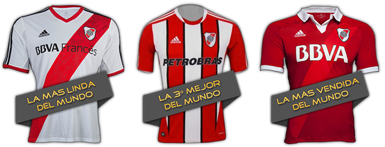

 Al comienzo la camisa de la escuadra riverplatense era blanca, hasta que la banda roja fue cruzada por primera vez en el año 1905 por Enrique Salvarezza. Aunque otros aseguran que la historia de la camiseta titular del Club Atlético River Plate proviene del año 1908. Una noche, un carnaval que se había organizado estaba llegando a su fin. En un viejo auto que allí estaba, colgaba de su parte trasera desprolijamente una cinta roja de seda. Cinco chicos, entre ellos Elisa Pecile, decidieron robarla como una de sus tantas travesuras. Pero tenía un motivo, que era colocarle un detalle de color a la camiseta blanca que hasta ese momento identificaba al equipo. La cruzaron diagonalmente, sujetada con alfileres, y así nació la conocida camiseta de River Plate. Otra versión, sin embargo, con el apoyo de un oficial, considera que estos colores son tomadas por el signo de San Jorge, que incluye una cruz roja sobre fondo blanco. Esta cruz es el emblema de Génova: el rojo y blanco que se han adoptado ya que la mayoría de los miembros originales del club eran de origen genovés. En 1949 y con motivo de la Tragedia de Superga, River Plate uso una camiseta de lana con el color granate, típico del club italiano Torino, como camiseta alternativa. Completaba el uniforme el pantalón blanco y las medias grises. En 1962 y con motivo de la visita del Stade de Reims de Francia, este obsequió un juego de indumentaria que se utilizó durante algunas temporadas como alternativa: una camiseta de cuerpo rojo con mangas blancas, pantalón y medias blancas con círculos rojos. En 2013, la camiseta titular de River Plate con la banda roja fue elegida en una encuesta como la más linda del mundo por el medio estadounidense Bleacher Report.